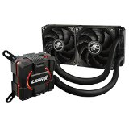

Als Prozessorkühler werden Kühlkörper bezeichnet, die auf die speziellen Anforderungen bei der Kühlung von Mikroprozessoren ausgelegt sind. Meist sind es Kühler-Lüfterkombinationen, verbreitet sind auch rein passive Kühlkörper und Wasserkühler.

Hier geht es zurück zur Hardware-Liste